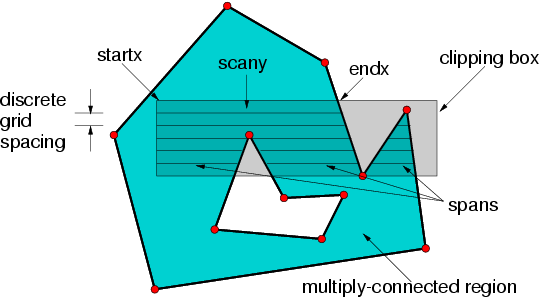
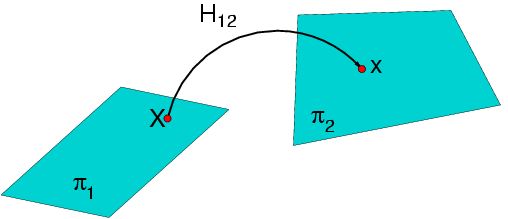

| [ < ] | [ > ] | [ << ] | [ Up ] | [ >> ] | [Top] | [Contents] | [Index] | [ ? ] |
Chapter summary: This library provides geometric primitive entities, like points and lines and planes. The goal is to provide very lightweight structures than are just slightly more costly than matrices or vectors. At the same time these classes can support all the routine geometric computations that are needed in basic computer vision operations. The idea is that more complex spatial objects would use the vgl operations to carry out basic geometric computations without duplicating operations like line intersection.
| [ < ] | [ > ] | [ << ] | [ Up ] | [ >> ] | [Top] | [Contents] | [Index] | [ ? ] |
The core geometry library vgl is intended to provide an environment for
geometric primitives, both in Cartesian and homogeneous representations, and
for both 2D and 3D.
This includes classes for
In addition, the vgl/algo library contains functions to perform elementary
geometric operations like intersecting a bundle of planes, finding the nearest
point on a line or a conic, computing the cross ratio of four points or lines, ...
For convenience, most of this functionality is put in a "name space", separate
for 2D and 3D, and separate for Cartesian and homogeneous representations.
Some of the most elementary operations like distance calculations and simple
intersections are implemented in the vgl library, often through class
methods.
All representation classes are templated on the computational numeric type,
typically double or float, but it could make sense to use other
types like int (especially with homogeneous representations) or e.g.
vnl_rational or vcl_complex<double>.
| [ < ] | [ > ] | [ << ] | [ Up ] | [ >> ] | [Top] | [Contents] | [Index] | [ ? ] |
The most general geometric framework is based on projective geometry and homogeneous coordinates. Projective operations arise in the analysis of image geometry and its relationship to the world geometry projected into the image by perspective cameras.
The basic 2D classes using homogeneous (3-argument) representations are:
vgl_homg_point_2d<T>
vgl_homg_line_2d<T>
vgl_conic<T>
Some useful functions can be found in vgl_intersection.h, vgl_distance.h and vgl_closest_point.h, like e.g.:
bool vgl_intersection(vgl_line_2d<T> const& line0, vgl_line_2d<T> const& l2, vgl_point_2d<T> & pt)
vgl_point_3d<T> vgl_intersection(vgl_line_3d_2_points<T> const& l1, vgl_line_3d_2_points<T> const& l2)
double vgl_distance(vgl_homg_point_2d<T> const& p1, vgl_homg_point_2d<T> const& p2)
double vgl_distance(vgl_homg_point_2d<T> const& p, vgl_homg_line_2d<T> const& l)
vgl_homg_point_2d<T> vgl_closest_point(vgl_homg_line_2d<T> const& l, vgl_homg_point_2d<T> const& p)
Some of the most useful static functions in namespace vgl_homg_operators_2d<T> are:
double distance_squared(vgl_homg_point_2d<T> const& point1, vgl_homg_point_2d<T> const& point2)
vgl_homg_line_2d<T> join(vgl_homg_point_2d<T> const& point1, vgl_homg_point_2d<T> const& point2)
to get the line through two points.
vgl_homg_point_2d<T> intersection(vgl_homg_line_2d<T> const& line1, vgl_homg_line_2d<T> const& line2)
to get the intersection point of two lines.
void unitize(vgl_homg_point_2d<T> &a)
to normalize a point representation (3-tuple) to unit magnitude.
double cross_ratio(vgl_homg_point_2d<T> const& p1, vgl_homg_point_2d<T> const& p2,
vgl_homg_point_2d<T> const& p3, vgl_homg_point_2d<T> const& p4)
double angle_between_oriented_lines(vgl_homg_line_2d<T> const& line1, vgl_homg_line_2d<T> const& line2)
Return the angle between the (oriented) lines (in radians).
double perp_distance_squared(vgl_homg_line_2d<T> const& line, vgl_homg_point_2d<T> const& point)
vgl_homg_line_2d<T> perp_line_through_point(vgl_homg_line_2d<T> const& line, vgl_homg_point_2d<T> const& point)
vgl_homg_point_2d<T> perp_projection(vgl_homg_line_2d<T> const& line, vgl_homg_point_2d<T> const& point)
vgl_homg_point_2d<T> midpoint(vgl_homg_point_2d<T> const& p1, vgl_homg_point_2d<T> const& p2)
vgl_homg_point_2d<T> lines_to_point(vcl_list<vgl_homg_line_2d<T> > const& lines)
to intersect a set of 2D lines to find the least-square point of intersection.
vcl_list<vgl_homg_point_2d<T> > intersection(vgl_conic<T> const &c, vgl_homg_line_2d<T> const &l)
to find all real intersection points of a conic and a line (between 0 and 2).
vcl_list<vgl_homg_point_2d<T> > intersection(vgl_conic<T> const &c1, vgl_conic<T> const &c2)
to find all real intersection points of two conics (between 0 and 4).
vcl_list<vgl_homg_line_2d<T> > tangent_from(vgl_conic<T> const &c, vgl_homg_point_2d<T> const &p)
returns the (at most) two tangent lines that pass through p and are tangent to the conic.
vgl_homg_point_2d<T> closest_point(vgl_conic<T> const& c, vgl_homg_point_2d<T> const& p)
returns the point on the conic closest to the given point.
Homogeneous projective geometry can be converted to standard Euclidean or Cartesian coordinates by normalizing by the third homogeneous coordinate. In general there will be need to convert back and forth between the two geometries to carry out operations efficiently. For example intersection of lines in homogeneous coordinates can be carried out simply using the cross-product of vectors.
| [ < ] | [ > ] | [ << ] | [ Up ] | [ >> ] | [Top] | [Contents] | [Index] | [ ? ] |
The basic 2D classes using non-homogeneous (2-argument) representations are:
vgl_point_2d<T>
vgl_vector_2d<T>
vgl_line_2d<T>
vgl_box_2d<T>
A vector is a directional difference between two points, i.e., something having a direction and a length.
A box is a rectangular bounding box, represented by two corner points: the "min" and the "max" coordinate points. All points inside the box have x coordinates between min-x and max-x, and y coordinates between min-y and max-y.
There are also two "composite" 2D curve objects:
vgl_line_segment_2d<T>
vgl_conic_segment_2d<T>
A line segment is a bounded part of a line, between two end points.
A conic segment is built on a vgl_conic<T> and two end points.
This curve only consists of those points of the conic between the two given end points.
(See the detailed documentation of this class for a precise definition of "between".)
| [ < ] | [ > ] | [ << ] | [ Up ] | [ >> ] | [Top] | [Contents] | [Index] | [ ? ] |
The basic 3D classes using homogeneous (4-argument) representations are:
vgl_homg_point_3d<T>
vgl_homg_plane_3d<T>
vgl_homg_line_3d_2_points<T>
Some useful functions can be found in vgl_distance.h and vgl_closest_point.h:
double vgl_distance(vgl_homg_point_3d<T> const& p1, vgl_homg_point_3d<T> const& p2)
double vgl_distance(vgl_homg_plane_3d<T> const& p1, vgl_homg_point_3d<T> const& p2)
double vgl_distance(vgl_homg_line_3d_2_points<T> const& p1, vgl_homg_point_3d<T> const& p2)
double vgl_distance(vgl_homg_line_3d_2_points<T> const& p1, vgl_homg_line_3d_2_points<T> const& p2)
vgl_homg_point_3d<T> vgl_closest_point(vgl_homg_plane_3d<T> const& l, vgl_homg_point_3d<T> const& p)
vgl_homg_point_3d<T> vgl_closest_point(vgl_homg_line_3d_2_points<T> const& l, vgl_homg_point_3d<T> const& p)
std::pair<vgl_homg_point_3d<T>,vgl_homg_point_3d<T> > vgl_closest_points(vgl_homg_line_3d_2_points<T> const& l1,
vgl_homg_line_3d_2_points<T> const& l2)
The most useful static functions in namespace vgl_homg_operators_3d<T> are:
T distance(vgl_homg_point_3d<T> const& point1, vgl_homg_point_3d<T> const& point2)
T distance_squared(vgl_homg_point_3d<T> const& point1, vgl_homg_point_3d<T> const& point2)
double perp_distance_squared(vgl_homg_line_3d const& line, vgl_homg_point_3d<T> const& point)
vgl_homg_point_3d<T> intersect_line_and_plane(vgl_homg_line_3d const& , vgl_homg_plane_3d<T> const& )
Return the intersection point of the line and plane.
vgl_homg_point_3d<T> perp_projection(vgl_homg_line_3d const& line, vgl_homg_point_3d<T> const& point)
Compute the perpendicular projection point of p onto l.
double angle_between_oriented_lines(vgl_homg_line_3d const& line1, vgl_homg_line_3d const& line2)
Return the angle between the (oriented) lines (in radians).
vgl_homg_point_3d<T> lines_to_point(vcl_vector<vgl_homg_line_3d> const& line_list)
vgl_homg_line_3d points_to_line(vcl_vector<vgl_homg_point_3d<T> > const& point_list)
vgl_homg_line_3d planes_to_line(vcl_vector<vgl_homg_plane_3d<T> > const& plane_list)
Return the intersection line of the planes.
vgl_homg_plane_3d<T> points_to_plane(vcl_vector<vgl_homg_point_3d<T> > const& point_list)
vgl_homg_point_3d<T> intersection_point(vcl_vector<vgl_homg_plane_3d<T> > const& ) double
Compute best-fit intersection of planes in a point.
| [ < ] | [ > ] | [ << ] | [ Up ] | [ >> ] | [Top] | [Contents] | [Index] | [ ? ] |
The basic 3D classes using non-homogeneous (3-argument) representations are:
vgl_point_3d<T>
vgl_vector_3d<T>
vgl_plane_3d<T>
vgl_box_3d<T>
"Non-basic" 3D classes, i.e. those built from the basic ones, include:
vgl_line_segment_3d<T>
vgl_line_3d_2_points<T>
vgl_sphere_3d<T>
| [ < ] | [ > ] | [ << ] | [ Up ] | [ >> ] | [Top] | [Contents] | [Index] | [ ? ] |
For sake of completeness, the following 1D representation classes are present:
vgl_homg_point_1d<T>
vgl_1d_basis<T>
A 1D basis is an arbitrary set of 3 (collinear) points. One receives coordinate 0 or (0,1), one has coordinate infinity or (1,0) and the unit point has coordinate 1 or (1,1). Such a set is an essential ingredient for any projective transformation.
| [ < ] | [ > ] | [ << ] | [ Up ] | [ >> ] | [Top] | [Contents] | [Index] | [ ? ] |
The vgl_polygon<T> class represents a more complex region or area in 2D space.
The vgl_region_scan_iterator class allows for iterating through regions.
More specifically, the derived classes vgl_polygon_scan_iterator<T>,
vgl_triangle_scan_iterator<T>, vgl_ellipse_scan_iterator<T> and
vgl_window_scan_iterator<T> can be used to iterate over the points of a
discrete grid that are interior to the region.
The general case for the polygon scan is shown in Figure 1.
|

Figure 1:
The general situation for a polygon scan iterator. The polygon defines a set of
discrete scan lines which are bounded by the polygon or by an optional clipping window.
|
::reset(). The boolean method ::next()
then iterates over the spans until all spans have been produced. When no more spans
are available ::next() returns false.
Thus an iteration over the interior of the polygon is executed as:
...
vgl_polygon<double> my_polygon;
...
// do something to define the polygon
...
vgl_polygon_scan_iterator<double> psi(mypolygon);
psi.set_include_boundary(true); // optional flag, default is true
for (psi.reset(); psi.next(); ) {
int y = psi.scany();
for (int x = psi.startx(); x <= psi.endx(); ++x)
....
// do something with x and y, e.g. compute the center of gravity of
// the interior points.
}
|
The vgl_polygon_scan_iterator<T> also supports the specification
of an optional clipping window. The window is intersected with the polygon
to define scan region as shown in Figure 1. The window is specified by
an alternative constructor:
vgl_polygon_scan_iterator<float>(vgl_polygon<float> const& face, bool boundaryp,
vgl_box_2d<float> const& window)
|
Note that the boundaryp flag is defined to determine if points on the boundary of the polygon or window are to be included in the scan.
The area of a polygon can be determined with the vgl_area function.
| [ < ] | [ > ] | [ << ] | [ Up ] | [ >> ] | [Top] | [Contents] | [Index] | [ ? ] |
One of the goals of vgl is to support the basic operations of
projective geometry. This goal inevitably entails the use of
projective transformations which are typically represented as square
matrices of dimension n+1, where n is the dimension of the geometric
space in which a point set is embedded. Because of the strict rules of
core libraries, vgl is not permitted to require other core libraries
in order to carry out its operations. At the same time there is no
justification to re-invent a numerical library within vxl simply to
avoid library cross-linking. The solution is to define a vgl/algo
library that can link to vnl and thus make use of the necessary vnl
functions. A user can cleanly link to very basic vgl classes without
including vnl, but the full operations of projective geometry will
require the use of vnl matrix algorithms.
|

Figure 2:
The mapping of points from one projective plane to another. The transformation can be represented by a 3x3 matrix.
|
| [ < ] | [ > ] | [ << ] | [ Up ] | [ >> ] | [Top] | [Contents] | [Index] | [ ? ] |
Much of the discussion here will center on the projective plane (2-d points and lines) but a partial set of operations are available for both 1-d and 3-d geometry. The basic operation is to transform a point or line, and in the projective plane this corresponds to multiplying the vector of corresponding homogeneous coordinates by a 3x3 transformation matrix. This basic operation is illustrated in Figure 2. The projective transformation between planes is often called a planar homography, thus the symbol h, or H, is used to represent transformations.
The class vgl_h_matrix_2d<T> defines the basic operations of a planar homography.
Points and lines are transformed by the operator () or the * operator as for example,
... vnl_matrix_fixed <double, 3,3> M; ... //define M somehow ... vgl_h_matrix_2d <double> H(M); vgl_homg_point_2d<double> X(1.0, 0.0, 1.0), x1, x2; x1 = H(X); x2 = H*X; ... |
and x1 ~ x2, where ~ indicates that the two points are projectively equivalent. That is, their three homogeneous coordinates are within a scale factor of each other.
The method preimage effects the
inverse transformation. So continuing with our example,
... vgl_homg_point_2d <double> Xpre; Xpre = H.preimage(x1); .. |
and X ~ Xpre. This operation is carried out by inverting the forward transformation matrix.
The process is similar for lines, but it should be noted that the transformation for lines requires a different matrix then that for points. It can be shown that,
H_line = (H_point)^-t
where ^-t indicates the transpose of the inverse of a matrix. Thus, the forward transformation of a line from plane 1 to plane 2 requires a matrix inverse. On the other hand, the pre-image operation is easier, only requiring a matrix transpose.
The ambiguity as to whether an vgl_h_matrix_2d<T> is a point
mapping or a line mapping is avoided by the convention that the class
only refers to point mappings. The matrix inverse could be cached to
avoid extra computation, but currently it is not, since there hasn't
been performance issues to motivate the extra machinery. Still, the
user should be aware that inversion is occurring on every forward line
transformation.
| [ < ] | [ > ] | [ << ] | [ Up ] | [ >> ] | [Top] | [Contents] | [Index] | [ ? ] |
vgl/algo also provides a basic capability for carrying out 3-d
to 3-d projective transformations, based on a 4x4 linear matrix
multiplication. The most common application is to implement Euclidean
transformations (rotation and translation) in a unified, compact framework.
For example the following code defines a Euclidean transformation
based on a given axis of rotation:
vgl_h_matrix_3d <double> Hrot, Htrans, H; //Setup the rotation transformation vnl_vector_fixed<double, 3> axis(0.0,0.0,1.0);//The z axis double angle = vnl_math::pi/4.0;//45 degree rotation Hrot.set_rotation_about_axis(axis, angle); //Set up the translation transformation Htrans.set_translation(1.0, 2.0, 3.0); //compose the two. The rotation is applied first and then the translation H = Htrans*Hrot; ... // Transform a 3-d homogeneous point vgl_homg_point_3d<double> X(1.0, 0.0, 0.0, 1.0), x; x = H(X); // //The resulting transformed point // x = (1.707, 2.707, 3.0, 1.0) |
In 3-d projective space, points and planes hold the same dual relationship as points and lines do in 2-d projective space. In 3-d, planes are transformed by H^-t, where H is a 3-d projective transformation on points.
Lines in 3-d are considerably more complicated than points and
planes. The representation called Plucker coordinates which allows
computations involving lines to be carried out using matrix and vector
operations. It is planned to introduce Plucker geometry into vgl/algo
when the need arises.
| [ < ] | [ > ] | [ << ] | [ Up ] | [ >> ] | [Top] | [Contents] | [Index] | [ ? ] |
A standard coordinate frame is defined in projective geometry, called the projective basis. The basis is constructed from four points and in the coordinate frame of the basis these points have coordinates as follows:
p[0] p[1] p[2] p[3]
1 0 0 1
0 1 0 1
0 0 1 1
|
Note that the first two points are points at infinity, or
ideal points that indicate the direction of the x and y
coordinate axes. The third point is the origin and the last point is
called the unit point and is at Euclidean coordinates (1,1).
The method bool projective_basis(vcl_vector<vgl_homg_point_2d<T> > const & four_points)
sets the transformation so as to map points from their projective plane to the plane defined by the canonical basis.
The more general case is based on classes that compute a plane projective transformations based on sets of corresponding points or lines. For example,
vgl_h_matrix_2d_compute_linear hcl; vcl_vector <vgl_homg_point_2d <double> > point_set1, point_set2; ... //fill these two vectors with corresponding points //taken from two projective planes, //e.g. a world plane and the image plane. // vgl_h_matrix_2d <double> H = hcl.compute(point_set1, point_set2); // H represents the homography that // transforms points from plane1 into plane2. |
This functionality is very useful in tracking planar surfaces in images and in the calibration of perspective cameras. Currently, only linear algorithms are available for finding the homography that best fits the mapping between two sets of corresponding points or two sets of corresponding lines. It is planned to add non-linear compute methods, such as Levenberg-Marquardt.
| [ << ] | [ >> ] | [Top] | [Contents] | [Index] | [ ? ] |
This document was generated on May, 1 2013 using texi2html 1.76.